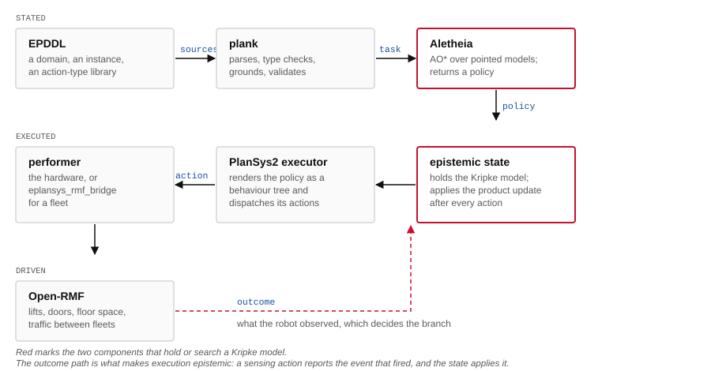

Coordination domains · UGV fleets
Four EPDDL domains in which a fleet of unmanned ground vehicles must reach a prescribed configuration of knowledge, not a configuration of the world. Each domain fixes one thing only: who observes what. This page states the planning task, gives the observability model of each domain, and executes the policies the planner actually returned.
The four cases
Adding an agent indexes the modality. Dropping the truth axiom turns knowledge into belief. The four pages below are the four combinations, each with a domain that reaches it.
The planning task
An epistemic state is a multi-pointed Kripke model \(\mathcal{M} = (W, \{R_i\}_{i\in\mathcal{A}}, V, W^{*})\): the worlds a fleet considers possible, one indistinguishability relation per vehicle, a valuation, and the designated set \(W^{*}\) of candidates for the actual world. Knowledge is \(\mathrm{S5}\), so each \(R_i\) is an equivalence.
An action is an event model \(\mathcal{E} = (E, \{Q_i\}, \mathrm{pre}, \mathrm{post}, E^{*})\), applied by product update. The relation \(Q_i\) carries the entire modelling commitment: a vehicle that relates every event to a distinguished null event is oblivious, it observes neither the outcome of the action nor its occurrence.
A sensing action has \(|E^{*}| \ge 2\), one designated event per reading, so a solution takes the form of a policy: an AND/OR tree whose OR-nodes choose an action, whose AND-nodes branch over designated events, and every leaf of which satisfies the goal. Goals here are modal:
The third is the one no non-epistemic encoding expresses: it requires one vehicle to be informed and another to remain ignorant, so no scalar measure of "how much the fleet knows" can serve as a goal test.
The four domains
All four domains share a corridor of \(L\) bays, a fleet of \(N\) UGVs, a target confined to \(U\) candidate bays, movement as a public ontic action, and sensing as strictly private: a vehicle reads only the bay it occupies, and no teammate observes the reading. What differs is the communication action.
Facility-wide radio. One transmission establishes \(C_{\mathcal{A}}\), so fleet knowledge is always symmetric. The planning problem is the division of labour: who drives where, and when to speak.
Range-limited radio: the sender's bay and its neighbours. Acquisition happens at the far end, delivery must happen near the fleet, so policies gain a return, a relay, or a rendezvous.
Point-to-point radio with a single detector in the fleet. Reaches asymmetric information states: one teammate informed, another deliberately left ignorant.
Heterogeneous fleet, locked bays, several items. One vehicle holds the key, another the detector, so an ontic action becomes the precondition of an epistemic one.
Range limitation is not a special case in the planner; it is an observability condition evaluated per agent at update time. This is the single block in which ugv-radio differs from ugv-public:
(:action report :parameters (?i - agent ?l - location) :action-type (private-announcement (e-report ?i ?l) (nil)) :observability-conditions (:and (?i Fully) (:forall (?j - agent | (/= ?i ?j)) (?j (if (forall (?l1 - location) (imply (at ?i ?l1) (exists (?l2 - location | (or (= ?l2 ?l1) (adjacent ?l1 ?l2) (adjacent ?l2 ?l1))) (at ?j ?l2) ))) Fully else Oblivious ) ) ) (default Oblivious) ) )
Map and model
The fleet drives on a metric map; the planner reasons over a symbolic quotient of it. Cells of the occupancy grid group into bays, and the bay a vehicle occupies is the atom \(\textit{at}(i,b)\). What the planner adds on top is the third column: the set of worlds still considered possible. Below, a three-bay search runs on both representations at once. The target is in \(b_3\), \(b_4\), or \(b_5\), and R1 is the only vehicle with a detector.
Policy execution
Both policies below are transcribed verbatim from the solver's output on instances that differ in one respect only, the communication model. Three UGVs start at the depot \(b_1\); the target is in \(b_3\) or \(b_4\) and nobody knows which; the goal is \(C_{\mathcal{A}}\bigwedge_i \mathrm{Kw}_i\,p\) with \(p \equiv \textit{target-at}(b_3)\). Choose the branch to follow the sensing outcome the policy conditions on.
Capability interlock
In ugv-facility the fleet is heterogeneous: \(R_2\) carries the key but no detector, \(R_1\) the reverse, and a mid-corridor bay starts locked. Neither vehicle can complete the mission alone, and the dependency runs across the ontic/epistemic boundary, \(R_2\) must change the world before \(R_1\) can learn anything at all.
Measurements
204 instances, grounded with plank and solved with ALETHEIA under a 60 s search budget. The suite varies fleet size \(N\), corridor length \(L\), initial uncertainty \(U\), which is exactly \(|W|\), deployment, goal shape, and the number of items.
| Family | Solved | Depth | Expanded | Search (s) |
|---|---|---|---|---|
| public / common knowledge | 36/36 | 4 | 1 397 | 0.01 |
| radio / common knowledge | 32/36 | 5 | 4 829 | 0.04 |
| public / second-order | 36/36 | 4 | 1 397 | 0.01 |
| radio / second-order | 32/36 | 5 | 4 164 | 0.03 |
| directed / second-order | 30/30 | 5 | 536 | 0.01 |
| directed / selective | 20/20 | 5 | 1 254 | 0.01 |
| facility / common knowledge | 10/10 | 7 | 3 971 | 0.03 |
| All | 196/204 | 5 | 2 263 | 0.02 |
Medians over solved instances. All eight unsolved instances are range-limited with four candidate bays and three or more vehicles; every one is a search timeout and not an error. Grounding, by contrast, scales with \(N \times L\): from 0.02 s to 76 s across the same suite, an offline, cacheable cost, where search is the online one.
The catalogue
The domains below are stated in EPDDL over the intermediate action-type library, which supplies ontic change, sensing and announcement in public, semi-private, quasi-private and private forms. The observability conditions an action declares determine which frame the reachable state space has, so the frame is a consequence of the vocabulary a domain uses.
They are grouped by the logic their reachable models inhabit. Each tier extends the one above it: the language gains an index, then the frame gives up an axiom. The axiom schemas and the frame conditions they correspond to are stated with each tier, since the correspondence is what makes the frame a property that can be measured off a run.
One agent, one accessibility relation. The language is propositional logic closed under a single modality:
\(\varphi ::= p \mid \neg\varphi \mid \varphi \wedge \varphi \mid K\varphi\)
A model is a triple \(M = (W, R, V)\) with \(R \subseteq W \times W\) and \(V : W \to 2^{P}\), and the modality quantifies over the accessible worlds:
\(M, w \models K\varphi \iff \text{for all } v,\; wRv \implies M, v \models \varphi\)
Taking all four gives \(\mathrm{S5}\), on which \(R\) is an equivalence relation and the worlds partition into classes the agent cannot tell apart. A single-agent domain has no observability to declare, since every event is observed by the only agent there is; sensing shrinks a class and ontic change moves within one.
The repository holds no domain at this tier. Every domain here names at least two agents, because the questions the planner is used for are questions about what one agent knows of another. The tier is stated because the tiers below are defined by what they add to it.
The modality takes an index, and the model carries one relation per agent: \(M = (W, \{R_i\}_{i \in \mathcal{A}}, V)\), each \(R_i\) an equivalence. Group notions become definable:
Dynamics are given by an event model \(\mathcal{E} = (E, \{Q_i\}, \mathrm{pre}, \mathrm{post})\) and the product update \(M \otimes \mathcal{E}\), whose worlds are the pairs that survive their preconditions and whose relations compose pointwise:
\(W' = \{(w,e) : M, w \models \mathrm{pre}(e)\}, \qquad (w,e)\,R'_i\,(v,f) \iff w R_i v \text{ and } e Q_i f\)
Each \(Q_i\) is an equivalence when every agent either observes an event or is unable to distinguish it from the others it might be, so \(\mathrm{S5}_n\) is closed under the update and a domain built from public and semi-private types alone stays in this tier for every reachable state.
| domain | action types used | run |
|---|---|---|
| muddy-children | public sensing | — |
| Active-Muddy-Child | public sensing | — |
| building-rooms | public ontic, semi-private sensing | six-room survey |
| robot-warehouse | public ontic, semi-private sensing, public announcement | warehouse, over RMF |
| ugv-coordination | four observability models over one facility | this page |
The warehouse run is measured against this claim directly: every relation is reflexive at every step, so the frame is \(\mathrm{S5}_n\) from beginning to end. The measurement is Figure 5 there.
Dropping T and replacing it with D gives belief. The modality is written \(B_i\), and the axioms are those of \(\mathrm{S5}_n\) with reflexivity weakened to seriality:
The absence of T is the whole of the difference. Without reflexivity the actual world need not lie in an agent's own accessible set, and \(B_i\varphi \wedge \neg\varphi\) becomes satisfiable. A private ontic action or an announcement made to some agents and not others produces exactly this: the event model has a \(Q_i\) under which an uninformed agent takes a world where nothing happened to be accessible, while the pair carrying the change is the one that obtains.
A serial, transitive, Euclidean relation still partitions its range into a cluster, so an agent whose belief is false remains introspective and consistent about it. That is what makes the failure worth planning against: nothing in the agent's own perspective reveals it.
| domain | action types used | run |
|---|---|---|
| coin-in-the-box | private ontic, quasi-private sensing | — |
| box-task | public ontic, private ontic, private announcement | — |
| box-task-2.0 | the above with public sensing | — |
| doxastic-depot | all eight of the library’s types | — |
| hotel-incident | public ontic, semi-private sensing, private ontic, quasi-private and public announcement | hotel incident |
The hotel run crosses the tier boundary during execution. Its relations are equivalences until step 3, and two agents end the run in \(\mathrm{KD45}_n\) holding beliefs the world contradicts. The measurement is Figure 4 there.
Belief
An \(\mathrm{S5}_n\) model has an accessibility relation that is an equivalence, and reflexivity is the clause that makes knowledge factive: \(K_i\varphi \rightarrow \varphi\). An agent in such a model can be ignorant to any degree and its beliefs remain true. Every domain in the upper half of the table stays inside that fragment, because every action they declare is observed by all agents or by none in a way that leaves each agent's equivalence class containing the world that holds.
Two constructions leave it. A private-ontic action changes the world while some agents observe nothing, so an agent that formed a true belief before the change carries it afterwards, when it is false. A private-announcement informs part of the group, and the agents outside the audience continue in a world the message has already excluded. In both cases the agent's relation loses the self-loop at the actual world, the frame becomes \(\mathrm{KD45}_n\), and \(K_i\) is read as belief.
This is a property of the run and it can be measured. The hotel incident reports the accessibility relation of every agent after every action of an executed mission. Two agents lose reflexivity, at two identifiable steps, under the two constructions above:
| step | action type | inspector | porter | guest |
|---|---|---|---|---|
| initial | — | reflexive | reflexive | reflexive |
| 1 | public ontic | reflexive | reflexive | reflexive |
| 2 | semi-private sensing | reflexive | reflexive | reflexive |
| 3 | quasi-private announcement | reflexive | reflexive | irreflexive |
| 4 | private ontic | irreflexive | reflexive | irreflexive |
The model also grows at those two steps, from two worlds to four and then to five. A private action introduces the distinction between the world in which it occurred and the world its non-observers continue to occupy, and the model has to carry both.
doxastic-depot is the domain written to exercise this deliberately. Every relocation in it is private, so a crate moved once leaves every agent outside the source bay believing it is where it was; its five instances plant a false belief, plant a second-order false belief, repair one into common knowledge, and turn private knowledge into common knowledge by announcement.
The stack
A domain in this repository is a source file, and reaching a robot from there involves four components with distinct responsibilities.

plank parses the domain, its instance and the action-type library, checks their types, and grounds the lifted actions into the tokens a planner searches over. It also validates a plan independently, which is how a policy is checked against something other than the planner that produced it.
Aletheia searches over pointed Kripke models. Its unit of progress is the product update, so a sensing action with several outcomes produces several successors and the result is a policy with a branch at that action. The nested-goal study measures what the shape of the goal costs this search.
eplansys executes the policy on ROS 2. Its executor renders the policy as a behaviour tree, one node per policy node, each guarded by the knowledge its action requires and followed by the update its outcome determines. Its epistemic state holds the model and applies that update. The state answers two questions any component may ask: check_formula evaluates a modal formula, and get_agent_perspective returns the model as one agent sees it. The measured figures in the run reports are built from those two services.
The performer is whatever drives the hardware. For a fleet it is eplansys_rmf_bridge, which submits one Open-RMF task per action, pins it to the robot the planner named, and reports what the robot observed. Open-RMF decides lifts, doors, floor space and traffic between fleets, and holds no representation of knowledge; the Kripke model holds no representation of a lift. Each system decides what it can represent.
A sensing action's outcome selects the branch, so the outcome has to travel from the performer back to the state. plansys2_msgs/ActionExecution carries an outcome field for it, and the value is the name of an event the action's model declares. A performer that reports an event the policy does not list fails its branch, which is the treatment any unanticipated observation receives. An ordinary action leaves the field empty, and every classical performer does so.
Open issue
On the multi-item facility instances, the policy terminates on a private scan while the goal demands fleet-wide knowledge:
... broadcast_R1_o2_b2 -> unlock_R2_b2_b3
-> move_R1_b2_b3 -> move_R1_b3_b4 -> scan_R1_o1_b4 [leaf]
Since scan declares (default Oblivious), \(R_2\)'s accessibility class still contains worlds disagreeing on the item's bay, precisely the null copies of Figure 1, so \(\mathrm{Kw}_{R_2}\) fails and the goal cannot hold at that leaf.
Three checks locate the fault in the planner and not the encoding. plank's independent validator reports the goal unsatisfied on the same history; the identical model with a goal naming only the last-sensed atom is solved correctly, with the broadcast present; and all 190 corridor and addressed-radio policies end in a communication action, as does every single-item facility policy. Only goals conjoining knowledge requirements over two distinct atoms exhibit it.
Goal shape, knowing-whether, nested, negated, conjoined over several atoms, deserves standing as a benchmark dimension alongside instance size. Scaling a suite exercises one code path harder; varying the shape of the goal exercises different ones.
A planner's own plan validator cannot adjudicate this class of disagreement, since it shares the state pipeline under suspicion. The cross-check that settled it came from a second, independent implementation of the semantics.